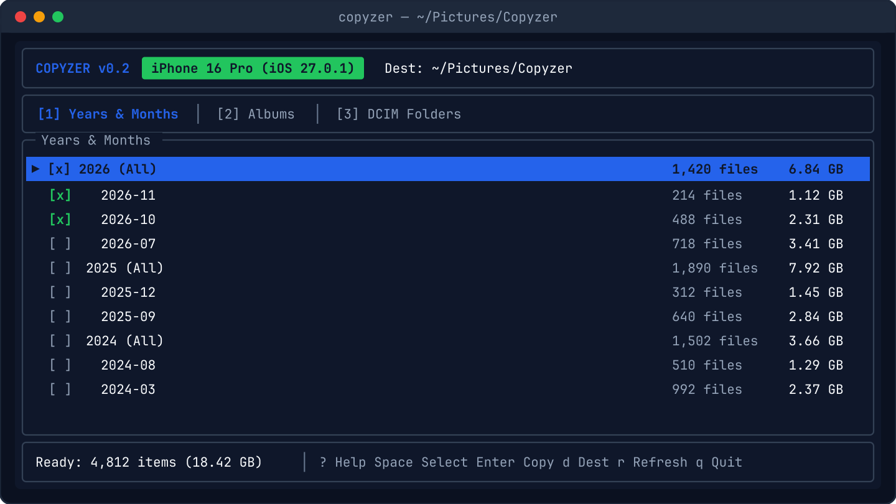

Instant DCIM & Year/Month scan
Walks DCIM/ using fast metadata stat calls with live progress updates on a background thread, keeping the TUI responsive.
Copyzer (English copy + Pashto zer, "fast") is a keyboard-first Rust TUI and CLI built for Arch Linux, Omarchy, and modern Linux desktops. Plug in via USB-C, pick Years, Albums, or DCIM folders, and copy originals safely.
curl -fsSL https://raw.githubusercontent.com/phaze7r/copyzer/main/install.sh | bash

Copyzer uses ifuse, libimobiledevice, and usbmuxd to mount your iPhone over USB-C without touching originals.
sudo pacman -S ifuse libimobiledevice usbmuxd
git clone https://github.com/phaze7r/copyzer.git
cd copyzer/pkgbuild
makepkg -siDesigned for multi-gigabyte iPhone libraries over USB-C without GUI bloat or silent overwrites.
Walks DCIM/ using fast metadata stat calls with live progress updates on a background thread, keeping the TUI responsive.
Reads PhotoData/Photos.sqlite in strict read-only mode when accessible, falling back cleanly to Years & Months and raw folders.
Writes to .part, syncs to disk, and renames atomically. Skips files with matching name & byte size and preserves capture timestamps.
Reads ~/.local/state/omarchy/current/theme/colors.toml automatically with a high-contrast slate dark fallback.
Mounts via ifuse into a temporary directory and unmounts cleanly on exit, error, or cancellation with lazy-unmount fallback.
Run copyzer doctor, copyzer scan --json, or copyzer copy in scripts and automated backups.
| Key | Action |
|---|---|
| Tab / 1–3 | Switch view (Years/Months, Albums, DCIM) |
| ↑/k ↓/j | Move cursor |
| Space | Toggle bucket selection |
| a | Select all / none in current view |
| Enter / c | Copy selected (or highlighted) bucket |
| d | Edit destination path (default ~/Pictures/Copyzer) |
| r | Refresh device & rescan |
| ? | Toggle help overlay |
| q / Esc | Cancel active copy or quit cleanly |
# Launch interactive TUI
copyzer
# Check usbmuxd, ifuse, libimobiledevice, and iPhone status
copyzer doctor
# Scan connected iPhone and output JSON
copyzer scan --json
# Copy a specific year/month headlessly
copyzer copy --year 2026 --month 11